3D mesh parameterizations generated by our proposed semantic- (left) and visibility-aware (right) pipelines. Semantic-Aware (left): To encourage semantically coherent UV charts that simplify texture editing, given an input 3D mesh (a), we design a partition-and-parameterize strategy: (b) compute a per-vertex semantic partition of the mesh, (c) learn a geometry-preserving UV parameterization independently for each semantic part to obtain per-part UV islands, and then aggregate and pack these islands into a unified UV atlas (insets). Visibility-Aware (right): To encourage seamless UV mappings, our visibility-aware pipeline (d) takes an input 3D mesh, jointly (e) guides cutting-seam placement (red curves), extracts the corresponding boundary points in UV space (red dots), and (f) estimates a global geometry-preserving parameterization. As a result, the method steers cutting seams toward less-visible (more occluded) surface regions, resulting in more visually seamless UV maps.
Abstract
Recent 3D generative models produce high-quality textures for 3D mesh objects. However, they commonly rely on the heavy assumption that input 3D meshes are accompanied by manual mesh parameterization (UV mapping), a manual task that requires both technical precision and artistic judgment. Industry surveys show that this process often accounts for a significant share of asset creation, creating a major bottleneck for 3D content creators. Moreover, existing automatic methods often ignore two perceptually important criteria: (1) semantic awareness (UV charts should align semantically similar 3D parts across shapes) and (2) visibility awareness (cutting seams should lie in regions unlikely to be seen). To overcome these shortcomings and to automate the mesh parameterization process, we present an unsupervised differentiable framework that augments standard geometry-preserving UV learning with semantic- and visibility-aware objectives. For semantic-awareness, our pipeline (i) segments the mesh into semantic 3D parts, (ii) applies an unsupervised learned per-part UV-parameterization backbone, and (iii) aggregates per-part charts into a unified UV atlas. For visibility-awareness, we use ambient occlusion (AO) as an exposure proxy and back-propagate a soft differentiable AO-weighted seam objective to steer cutting seams toward occluded regions. By conducting qualitative and quantitative evaluations against state-of-the-art methods, we show that the proposed method produces UV atlases that better support texture generation and reduce perceptible seam artifacts compared to recent baselines.
What do we aim to solve?
We first begin with a definition. Texture mapping, also referred to as UV/Mesh parameterization, is the process of converting a 3D mesh surface into a 2D image. It is a core step in digital 3D content production, enabling texture synthesis, painting, transfer, and high-quality rendering. For example, as shown in the top row of the figure below, given a raw 3D sphere mesh, the goal is to texture the sphere using a world map image. This task is relatively straightforward for a 3D artist or designer, as mapping pixels from a 2D texture image to vertices on a spherical surface is largely intuitive for humans. However, as the 3D geometry becomes more complex, such as the dragon shown in the bottom row of the figure, the problem of establishing a correspondence between the texture image and the 3D mesh becomes significantly more challenging. This process requires careful consideration of many factors, including surface continuity, distortion, and cutting seam placement. As a result, UV mapping poses two major challenges for UV/layout artists, designers, engineers, and others working with 3D assets: (1) the time required to design an effective mapping between 3D and 2D spaces increases substantially with geometric complexity, and (2) there is no generalized solution to this problem, requiring artists to manually design a custom mapping for each individual 3D object.
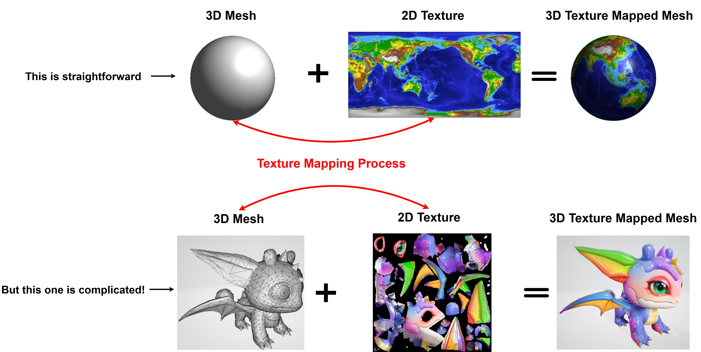While recent 3D generative methods can produce high-quality textures for 3D mesh objects (as shown in the picture below), they commonly rely on the heavy assumption that input 3D meshes are accompanied by the mesh parameterization process that requires both technical precision and artistic judgment. This assumption limits the usability of these generative AI models for content creators and designers. Moreover, industry surveys show that this process often accounts for a significant share of asset creation (up to ~60% of the overall 3D content production pipeline), creating a major bottleneck for 3D content creators.
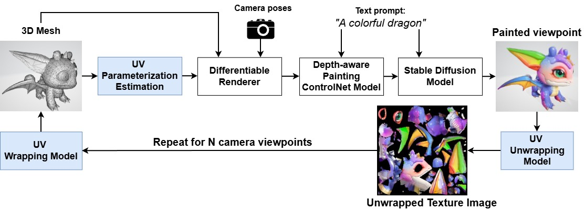Therefore, the research question we aim to address in this study is: Can we automate UV mapping in 3D content creation using AI in a way that satisfies the properties required by downstream tasks (e.g., texture synthesis), with the goal of accelerating and simplifying the workflows of UV/layout and modeling artists?
Problem Statement and Preliminaries
To address these issues and automate mesh parameterization, numerous methods have been proposed that mainly focus on geometric properties such as bijectivity, conformality, and equiareality, which we will explain in the following. The intuition behind all these properties is that, as shown in the picture below, once we convert a 3D triangular mesh surface into a 2D space (texture image), each triangular facet on the mesh surface in the 3D space is mapped to its corresponding triangle in the 2D space. Thus, what these properties enforce during this 3D-to-2D mapping process is that these triangular facets should be mapped into the 2D space in such a way that the overall distortion of all mapped triangular faces is minimized. This distortion includes preserving the triangular edge lengths as much as possible (isometricity), keeping the angles between each pair of edges nearly unchanged (conformality), and maintaining the area of each facet (equiareality). Moreover, bijectivity means that the mapping should be one-to-one, so that each surface point maps to a unique UV location. Once all these four properties are satisfied, we say that the specific UV mapping is geometry-preserving.
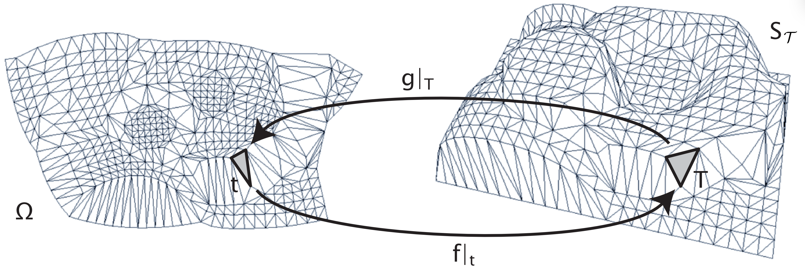
However, we would argue that while these properties are necessary to achieve a high-quality mesh parameterization, they are not sufficient for many downstream applications in content creation and texture synthesis. In particular, two perceptual criteria are often
neglected: (1) semantic awareness, 2D UV charts should align with semantically meaningful surface 3D parts so that textures designed for a semantic region remain coherent and transferable across 3D shapes; and (2) visibility awareness, cutting seams should
be placed where they are unlikely to be observed under typical viewpoints and lighting, so that seam artifacts are less perceptible after texturing and rendering.
To overcome these shortcomings, we present an unsupervised differentiable framework that augments standard geometry-preserving UV learning with semantic- and visibility-aware objectives. For semantic-awareness, our pipeline (i) segments the mesh into semantic
3D parts, (ii) applies an unsupervised learned per-part UV-parameterization backbone, and (iii) aggregates per-part charts into a unified UV atlas. For visibility-awareness, we use ambient occlusion (AO) as an exposure proxy and back-propagate a soft differentiable
AO-weighted seam objective designed to steer cutting seams toward occluded regions. The proposed pipeline has two stages: (i) a neural surface-parameterization backbone enforces geometry-preserving properties, (ii) semantic-aware and visibility-aware modules provide
task-specific (e.g., texture painting) guidance.
Methodology
Semantic-Aware UV Parameterization Pipeline
To encourage semantically coherent UV charts that simplify texture editing, transfer, and cross-object correspondence, we design a partition-and-parameterize pipeline (illustrated in figure below). Our semantic-aware parameterization has three stages:
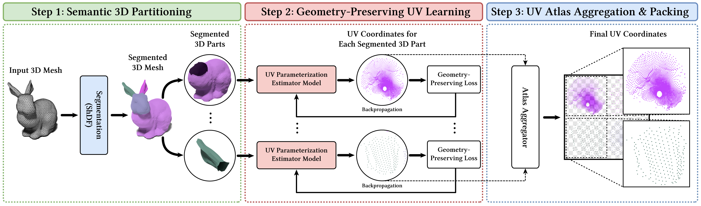
Stage 1: Semantic 3D partitioning, where we compute a per-vertex semantic partition of the input mesh using the shape diameter function (ShDF): Given an input mesh M=(V,F), we compute a semantic partition
using the shape diameter function (ShDF) as our primary signal. Intuitively, the ShDF maps each surface sample to a scalar that estimates the local object thickness (the diameter of the object in the
vicinity of that sample). Similar ShDF values typically indicate coherent semantic parts (e.g., limbs, body, handles), making the ShDF a practical cue for part-level partitioning of 3D shapes.
Our 3D partitioning strategy consists of the following steps for the detailed explanation of each step: (a) compute local ShDF, we compute a local thickness (ShDF) per face via ray casting inside
a cone about the inward normal at each surface point and smoothing the samples for spatial coherence; (b) fit GMM, to obtain soft per-face class likelihoods, we use a 1-D Gaussian mixture model (GMM) to fit K
(the deisred number of semantic components) Gaussians to the per-face thicknesses; (c) boundary smoothness cost, to bias the partition toward spatially coherent regions, we then combine these likelihoods with a
geometry-aware pairwise smoothness penalty (e.g., a dihedral-angle based boundary cost) on adjacent faces on the geometry to encourage coherent regions and penalize label changes across sharp edges. (d) initial
labeling, we then assign each face to the GMM component with maximum probability (minimum negative log-likelihood). This produces a purely data-driven segmentation that is generally noisy but captures the major
mode structure of the thickness field. (e) refine with graph cuts, we then refine the initial assignment by minimizing a global energy via iterative alpha-expansion, solving each expansion by an optimal min-cut.
Repeating this process across labels and iterating a few times yields stable and low-energy 3D partitions. (f) Relabel connected components, after refinement, a single label index can correspond to multiple disconnected
components. To solve this issue, we relabel each connected component of faces so that every final label corresponds to a single connected sub-mesh. This guarantees that subsequent per-part processing operates on contiguous
regions. (g) Post-processing, to produce clean 3D segmentation results, we apply several simple post-processing heuristics to remove spurious tiny components that would complicate per-part UV parameterization. The output is
then a set of connected semantic sub-meshes suitable for the per-part UV parameterization stage. This high-level pipeline is simple, robust, and fast. We also evaluate two modern zero-shot segmentation baselines, SAMesh and
PartField, as alternative partitioners and report comparative results in our ablation study.
Stage 2: Geometry-preserving UV learning, where we apply the base UV-parameterization backbone independently to each semantic 3D part to obtain per-part UV islands: For each semantic submesh, obtained from previous step, we
instantiate the base parameterization backbone, and optimize a part-specific mapping. Each part is trained with the same suite of differentiable objectives used for the global model. Therefore, we minimize the per-part loss:
Stage 3: UV atlas aggregation and packing, where we aggregate and pack these islands into a unified UV atlas: After optimizing all parts, we obtain per-part UV islands (each normalized to the unit square) corrsponding to each 3D segmented part. These islands are merged into a single atlas by an atlas aggregator. For clarity and reproducibility our current aggregator is intentionally simple and deterministic: the final UV sheet is a unit square subdivided into a G*G regular grid. We then assign each part k a unique grid cell indexed by row and column in row-major order. Each normalized island is placed into its assigned cell via a uniform similarity transform:
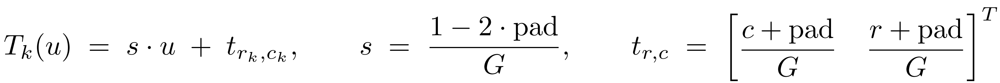Visibility-Aware UV Parameterization Pipeline
A common perceptual failure of UV atlases is that seams positioned on exposed, well-lit, or frequently viewed regions create visible discontinuities once textures are applied. To address this,
we introduce a visibility-aware objective that biases seam placement toward surface areas with low viewer exposure. As a proxy for visibility, we leverage ambient occlusion (AO), a standard geometric
measure of how much of the local hemisphere around a surface point is blocked by nearby geometry. This objective guides the backbone to produce UV islands whose seams coincide with regions of low exposure,
thereby relocating cuts to less visible areas of the 3D surface and reducing perceptible seam artifacts after texturing and rendering.
Our training procedure consists of four steps:
Step 1 - Compute per-vertex AO values on the input mesh: For each point (vertex) on the mesh surface, we define a hemisphere of outgoing directions (along with the normal direction at each vertex). Also we define
a binary visibiliy function V(p, w) as below at each point and direction on the mesh surface:
The ambient occlusion exposure AO(p) is then defined as the cosine-weighted average visibility over the hemisphere:
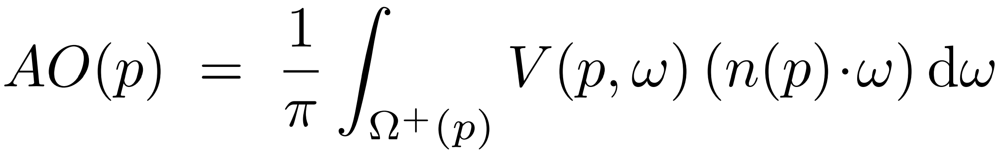By this convention, AO(p)=1 indicates a fully exposed point (no occlusion) and AO(p)=0 indicates a fully occluded point. We visualize per-vertex ambient occlusion for three different mesh objects (rabbit, cow, and human) in the picture below. The yellow and purple colors indicate the exposed and occluded parts of the mesh objects, respectively.
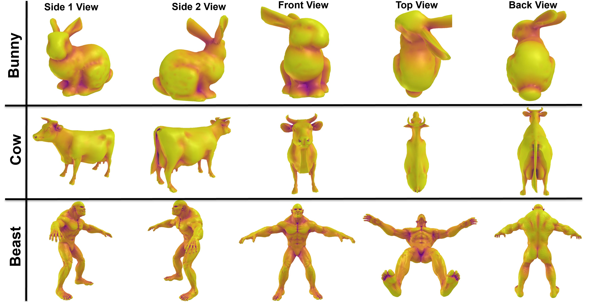
Step 2 - Apply a base UV-parameterization backbone to obtain candidate UV islands: Once per-vertex AO values are computed, we generate the UV parameterization using the base backbone to obtain a potential UV parameterization candidate.
This step is exactly the same as Step 2 in the semantic-aware UV parameterization pipeline described above.
Step 3 - Extract UV boundary points corresponding to cutting seams: We then extract cutting seams directly from the UV mapping learned in the previous step. This process has three steps: (a) neighbor selection, given a set of 3D surface
points P with their corresponding UV coordinates Q, the method determines whether each vertex lies on a seam by exploring its neighborhood. For each 3D point p_i in P with UV coordinate q_i in Q, we first find its N nearest neighbors in 3D,
with corresponding UV coordinates. (b) max UV distance computation, we then compute the maximum UV distance between q_i and its neighbors q_ij:
The intuition behind equation above is that, during training, at each iteration we must identify the cutting-seam (boundary) points in UV space in order to evaluate their ambient occlusion values and then compute the visibility-aware loss.
Minimizing this loss encourages the model to learn UV parameterizations whose seams lie in less-visible (low-AO) regions. Equation above provides a mechanism for detecting these seam points. Rather than locating seams directly on the 3D mesh,
we detect them in the UV domain based on how local neighborhoods deform during unwrapping. Specifically, for each 3D vertex we know both its 3D coordinates and its corresponding UV coordinates at the current iteration. Therefore, we examine the
3D neighbors of each vertex and compare their mapped UV positions. If a pair of vertices are close neighbors on the 3D surface but become separated by more than a threshold distance in UV space, this indicates that the surface has been cut between them.
We therefore mark such UV points as seam (boundary) points. This criterion is grounded in the fact that any valid unwrapping must introduce discontinuities (i.e., seams): vertices that are adjacent on the 3D surface become far apart in the UV plane after
the mesh is cut open. Equation above formalizes this idea by detecting precisely those locations where this large separation occurs.
The picture below shows a visualization of the cutting seam vertices of a 3D bunny in 3D space (right) and their corresponding UV coordinates in the 2D UV space (left), highlighted in red. Other vertices and their corresponding UV points are shown in grey.
Step 4 - Compute and minimize the AO-weighted average over the associated 3D vertices: However, this maximization problem in the equation above is not inherently differentiable, so we introduce mathematical modifications to ensure differentiability during the learning process. Specifically, instead of a hard decision, we assign each vertex a differentiable soft seam membership score. The maximization problem can then be formulated as a differentiable function:
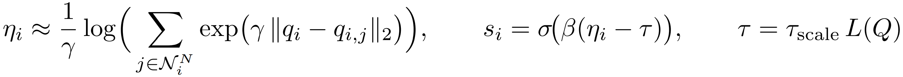After identifying soft seam memberships for each vertex, we encourage seams to lie in less visible regions of the surface. As a visibility proxy, we use per-vertex ambient occlusion values, computed in the first step, where 0 indicates fully occluded and $1$ indicates fully visible. The loss is then defined as the weighted average of occlusion values, using soft seam memberships as weights:
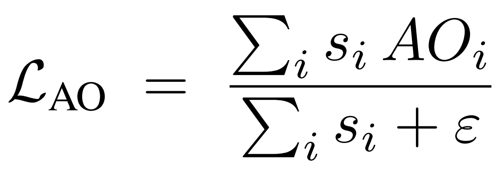Intuitively, if the network assigns high seam weight to highly visible vertices (high AO), the loss is large. Conversely, assigning seam weight to occluded vertices (low AO) reduces the loss. Therefore, minimizing the loss function above guides seam placement toward regions of low exposure.
Comparative Results
We evaluate our unsupervised semantic- and visibility-aware UV parameterization pipelines on a diverse collection of meshes and compare against several baselines. We provide both qualitative and quantitative comparisons to: FlexPara (recent state-of-the-art global parameterization network), Autodesk Maya (industry-grade commercial software), Blender (popular open-source modeling tool), and xatlas (widely-used C++ library for generating unique texture coordinates suitable for lightmap baking and texture painting).
Qualitative Comparison of Visibility-Aware UV Parameterization
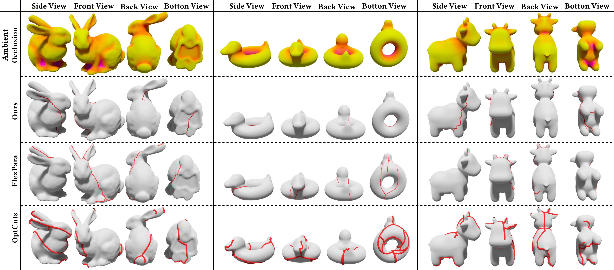Qualitative results for visibility-aware seam placement and UV parameterization on three representative meshes. For each mesh, the top row shows per-vertex ambient occlusion (yellow = exposed, purple = occluded). Beneath are the visualizations of cutting seams (red) from our method, FlexPara, and OptCuts (top to bottom). Our method places a larger fraction of seam geometry in less-exposed regions, reducing the likelihood of visible seam artifacts under typical viewpoints.
Qualitative Comparison of Semantic-Aware UV Parameterization
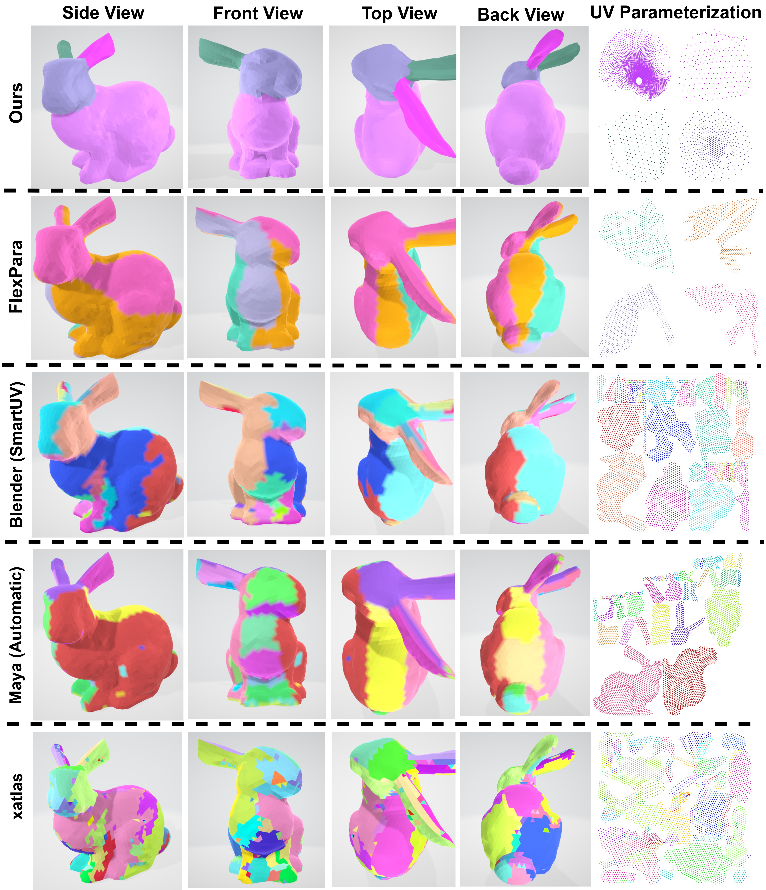Qualitative results of the proposed semantic-aware UV parameterization method on a Rabbit mesh. For each method, we show the rendered 3D object from multiple viewpoints, with the corresponding UV atlas in the rightmost column. As shown, our method produces UV charts that are align more semantically with the mesh’s 3D semantic parts, unlike the baselines.
Qualitative Comparison of Checkerboard Texturing using Different UV Parameterization Methods
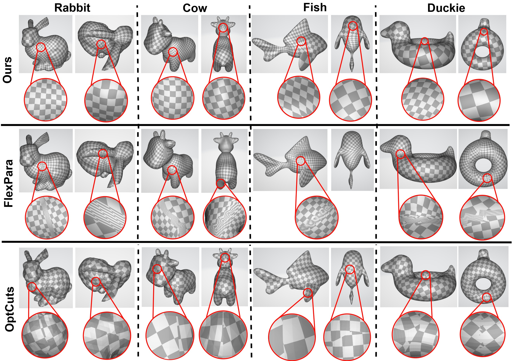Checkerboard texturing comparison using UV parameterizations produced by our visibility-aware method, FlexPara, and OptCuts. Each row shows rendered views of different meshes textured with a checkerboard and a magnified inset of a visually important region near seams (red circles). Because our method steers seams toward occluded regions, the checkerboard pattern appears substantially more continuous from typical camera viewpoints. By contrast, baselines exhibit visible seam artifacts in the zoomed-in insets.
Quantitative Comparison of Semantic-Aware UV Parameterization
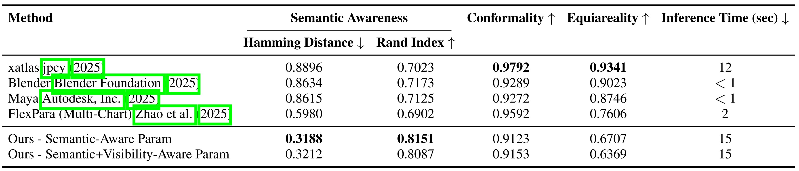Quantitative Comparison of Visibility-Aware UV Parameterization
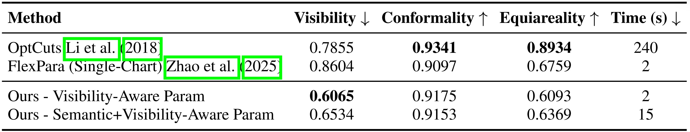User Preference Study
To evaluate semantic- and visibility-awareness of the proposed method, we conducted a user-preference study with 115 participants. We distributed the questionnaire to two groups: experts and general participants. Of the 115 participants, 70 are general participants (including graduate students with computer science and engineering backgrounds) and 45 are experts: 31 software engineers, 3 project managers, 2 product owners, 5 UV/layout artists, and 4 modeling artists, all working in the Media and Entertainment industry for film and games. Each participant completed 11 comparisons between textured 3D shapes and UV parameterizations produced by our method, FlexPara, OptCuts, Autodesk Maya, Blender, and xatlas. For each comparison, participants were rated each result according to three visual criteria: (i) texture-pattern smoothness/continuity, (ii) semantic alignment (how well colors correspond to meaningful parts), and (iii) seam visibility (how well seams are placed in occluded/less-obvious regions). The semantic-aware and visibility-aware evaluations comprised 5 and 6 questions, respectively, for a total of 11 comparisons per participant. Tables below report the percentage of expert and general participant preferences for each method. As the tables show, our proposed method is strongly preferred over the baselines by both expert industry-level users and general users.
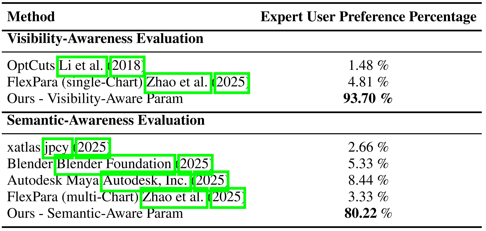 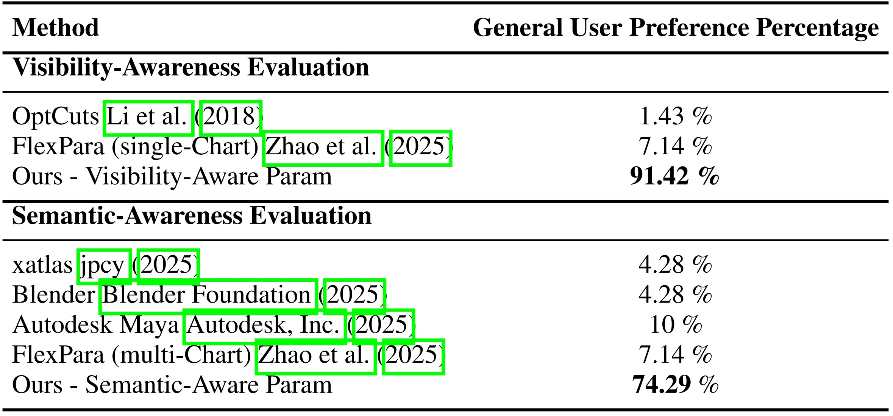Acknowledgements
This research was supported by Autodesk Research and the Autodesk AI Lab. We are especially thankful for the collaborative environment, technical resources, and insightful discussions that contributed to shaping this work.
If you find this study useful in your work, we kindly ask that you cite it using the following format.
BibTeX
@article{zamani2025unsupervised,
title={Unsupervised Representation Learning for 3D Mesh Parameterization with Semantic and Visibility Objectives},
author={Zamani, AmirHossein and Roy, Bruno and Rampini, Arianna},
journal={arXiv preprint arXiv:2509.25094},
year={2025},
url={https://ahhhz975.github.io/Automatic3DMeshParameterization/}
}